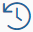
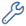
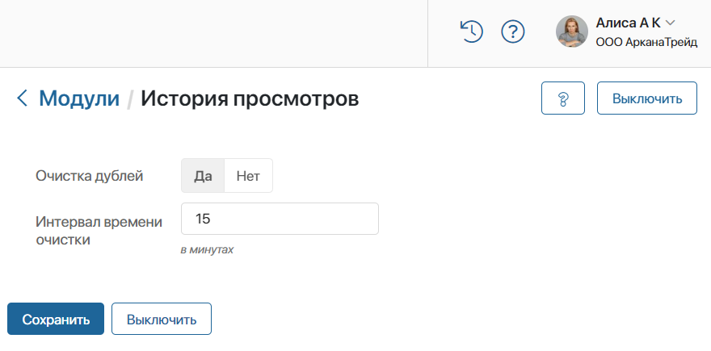
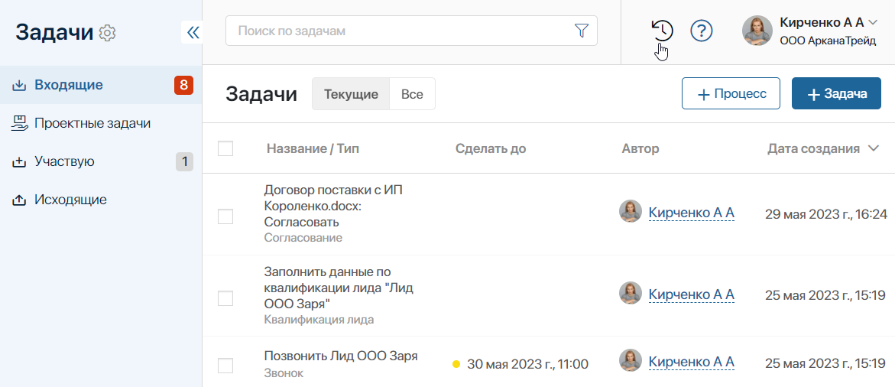
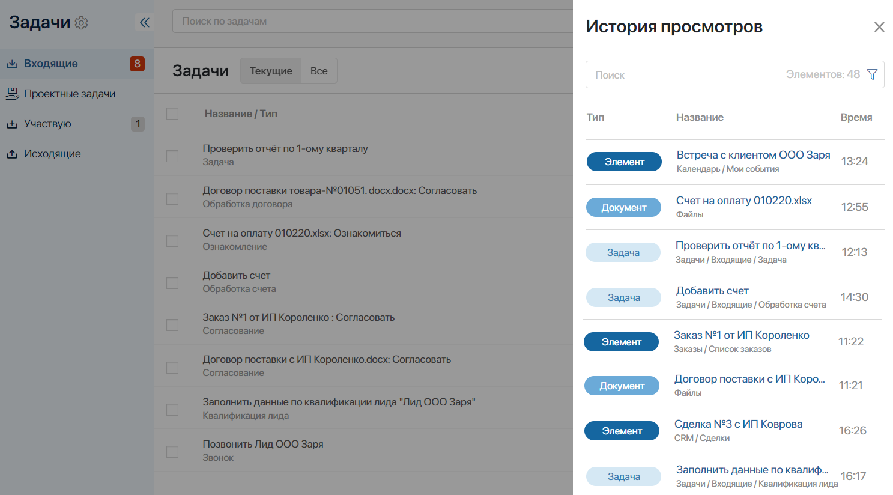
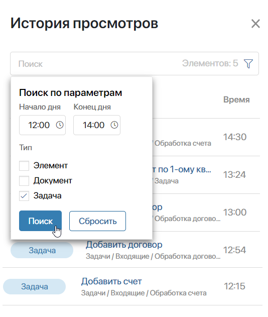

Решение История просмотров отслеживает и показывает список объектов системы, просмотренных вами за последние 24 часа. Это могут быть элементы приложений, события в календаре, задачи или файлы. Решение работает как в браузере, так и в приложении ELMA365 для ПК и мобильных устройств.
После установки решения на верхнюю панель рядом с вашим профилем добавляется значок . Нажав на него, вы откроете список объектов, с которыми недавно работали.
Вы можете включить опцию для удаления дублирующих записей в списке, а также сортировать элементы по названию, типу объекта и временному интервалу открытия.
Установка и настройка решения
Решение История просмотров импортируется из каталога ELMA365 Store.
начало внимание
Загрузить и настроить решение могут только пользователи, входящие в группу Администраторы.
конец внимание
Чтобы установить решение, выполните следующие действия:
- На любой странице системы, в левом меню разделов нажмите на значок .
- В открывшемся окне Настройка Разделов и Решений перейдите на вкладку Решения, нажмите кнопку + Добавить решение и выберите Скачать.
- В каталоге ELMA365 Store выберите решение История просмотров и установите его.
- Поскольку решение является платным, его необходимо активировать. Для этого перейдите в раздел Администрирование > Управление лицензиями и напротив названия решения нажмите кнопку Активировать.
- В открывшемся окне скопируйте Регистрационный токен решения и передайте его менеджеру ELMA365.
- Укажите предоставленный ключ активации решения в форме и нажмите Активировать.
Подробнее о процессе добавления решения в систему читайте в статье «Импорт решения из ELMA365 Store».
По окончании установки в систему будет добавлен модуль История просмотров. Перейдите на страницу модуля и выполните настройки, чтобы использовать историю просмотров.
Настройка модуля «История просмотров»
В модуле История просмотров включаются опции, отвечающие за отображение дублирующих записей в списке просмотренных объектов.
Чтобы настроить модуль:
- Перейдите в раздел Администрирование > Модули и выберите модуль История просмотров.
- Укажите настройки на странице модуля.

- Очистка дублей — выберите опцию Да, чтобы включить проверку на повторяющиеся записи в виджете;
- Интервал времени очистки — укажите время в минутах. Элементы, открытые в течение этого времени несколько раз, будут считаться дублями.
Например, установите в настройках значение Да и интервал времени в 15 минут. Тогда пользователи смогут переходить в карточку одного элемента несколько раз за это время, а в списке будет отображаться только одна запись о нём.
- Сохраните настройки.
Настройка отображения объектов в списке
В истории просмотров фиксируются следующие объекты системы:
- системные задачи, созданные в разделе Задачи;
- события, добавленные в календаре;
- документы различных форматов, например, .pdf, .doc, .xls и т. д., загруженные в разделе Файлы. Исключения составляют изображения форматов .jpg, .png и т. д.;
- элементы приложений типа Стандартное, Событие, Документ, на формах просмотра которых расположен виджет Зона расширения тулбара;
- задачи, назначенные в рамках системных и пользовательских бизнес-процессов по элементам приложений, на формах которых расположен виджет Зона расширения тулбара.
По умолчанию виджет Зона расширения тулбара присутствует на формах всех пользовательских приложений.
Чтобы в истории просмотров отображались элементы других приложений, например, входящих в состав системных решений, необходимо добавить виджет на их формы вручную. Для этого:
- Откройте страницу нужного приложения, например, Сделки из системного решения ELMA365 CRM.
- Нажмите на значок шестерёнки рядом с названием приложения и выберите пункт Настройка формы.
- Перейдите на вкладку Просмотр. На верхней панели напротив поля Форма нажмите <По умолчанию> и затем кнопку + Создать форму, или Редактировать форму, если в неё уже вносились изменения.
- Откроется дизайнер интерфейсов. На верхней панели поля для моделирования нажмите + Кнопка и в списке выберите виджет Зона расширения тулбара.
- В окне настроек виджета в поле Текущий элемент* нажмите на значок , а затем <Не установлено> и выберите Ссылка на текущий элемент.
- Сохраните настройки виджета.
- Чтобы выйти из дизайнера интерфейсов, нажмите Сохранить и Опубликовать на верхней панели.
Теперь открытые пользователем за последние сутки сделки будут отображаться в истории просмотров. Если по сделке запущен экземпляр бизнес-процесса, назначенные на сотрудника в его ходе задачи также будут добавляться в список.
Работа с историей просмотров
После установки решения на верхней панели рядом с вашим профилем вы увидите значок . Он будет доступен на любой странице системы. Нажав на него, вы откроете список с историей недавно просмотренных элементов.

В этом списке вы увидите тип и название объекта, время его открытия, а также информацию о разделе, в котором хранится элемент, или название бизнес-процесса для задач.

Чтобы перейти в карточку элемента, нажмите на его название.
Поиск объектов
Вы можете искать записи в списке по названию или сортировать их по параметрам.
Введите полное название или его часть в поле поиска и нажмите Enter на клавиатуре.
Если вы хотите отфильтровать элементы по параметрам, в строке поиска нажмите значок  . Затем укажите интервал работы с объектами или их тип и нажмите кнопку Поиск.
. Затем укажите интервал работы с объектами или их тип и нажмите кнопку Поиск.

Чтобы отчистить параметры поиска, нажмите Сбросить.